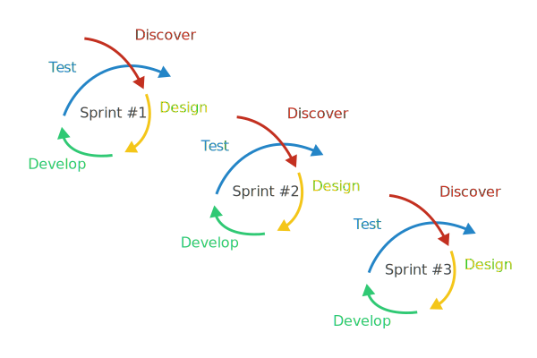
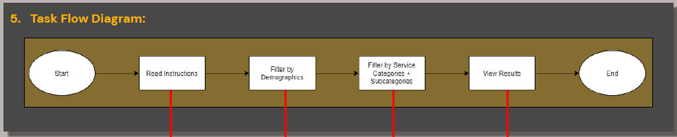
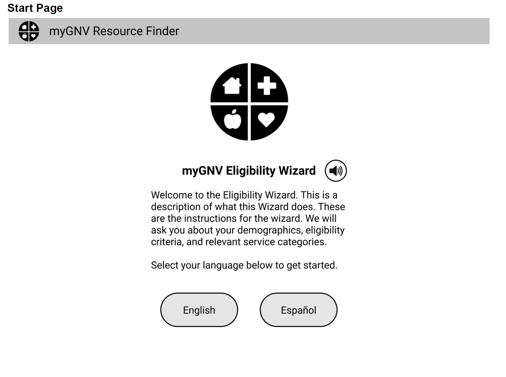
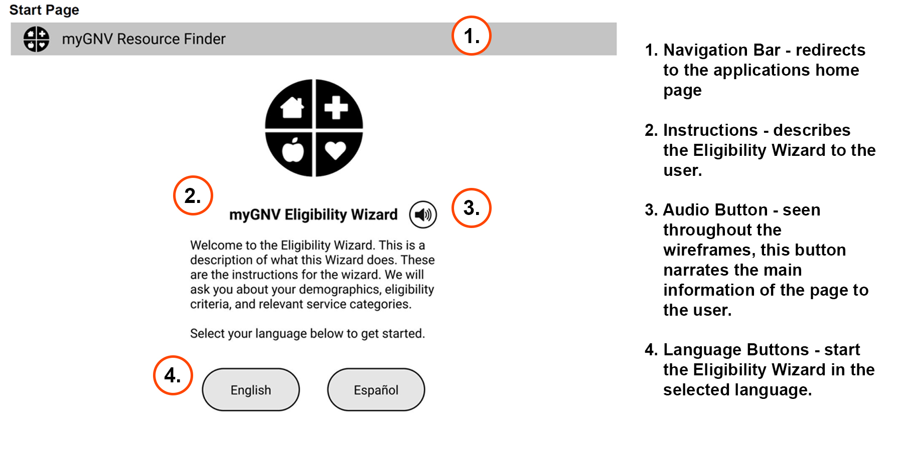
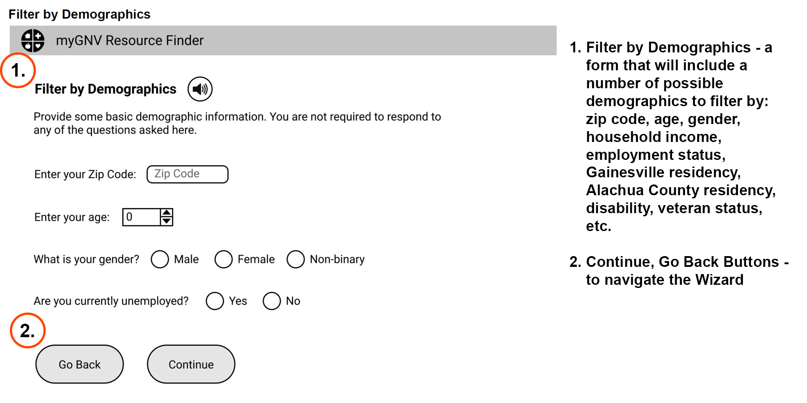
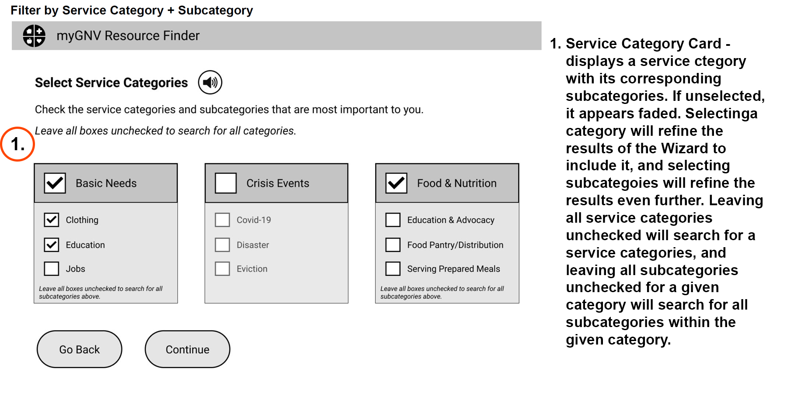
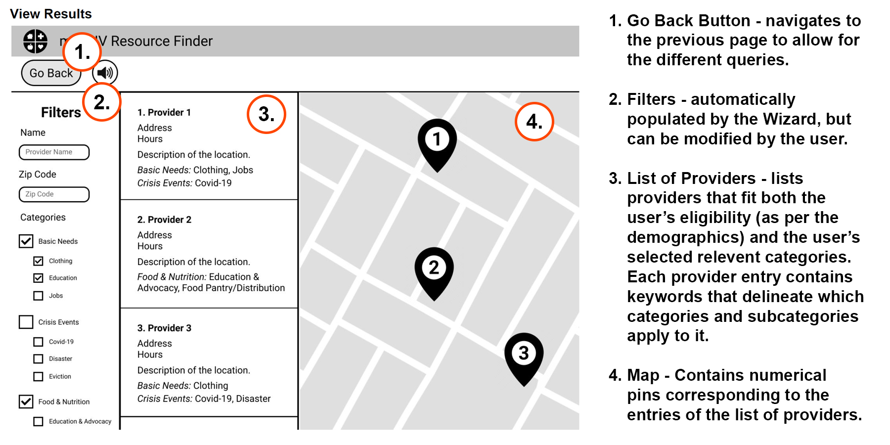

Overview
Introduction
myGNV was our final project for the UX design course at the University of Florida. We were given a brief from the city of Gainesville’s Office of Strategic Initiatives and were challenged to complete the project in 6 weeks or 3 agile sprints. The city’s representative wanted us to create a local resource finder that gave the user information about resources that they were qualified for.
My group (3 other students and I) was given this task during the COVID-19 pandemic which made it even more difficult because we were only able to communicate through Zoom and Slack.
For a more in-depth look at our process, continue scrolling through the full case study. Otherwise, click here to jump to my solution.
Project Specs
- Project Type: UX Design Course Final Project
- Client: The City of Gainesville, Office of Strategic Initiatives
- Duration: 6 weeks
- Team: 4 students
- Tools: Miro, Figma, Photoshop
Design Process

Our team used Agile methodology in the development of myGNV to reduce the amount of research and documentation to a minimum, form quick assumptions and hypotheses instead, and move forward faster.
Agile is all about cutting down on the number of steps in the design process, creating quick solutions, measuring and validating them, getting feedback (e.g., through A/B or usability testing), seeing what works, and then applying the best options. This way, the design can be delivered as fast as possible.
The duration of the project was split into three sprints, each two weeks long.
Sprint 1
Stakeholder Brief
The City of Gainesville’s Office of Strategic Initiatives wanted a team of user experience designers to build a web application to help residents get access to and information about resources in the community that they were qualified for.
The goal was to understand the needs of Gainesville community members, particularly those whose needs can be satisfied by community providers. Our target audience includes low-income households, those who are uninsured, people with disabilities, and those experiencing mental health issues or crisis events. We need to provide easy access to community resources with a human-first approach to our target users’ needs, familiarity with technology, literacy obstacles, and accessibility concerns.
Target Users:
- low-income households
- single-parent households
- those without cars
- those who are uninsured
- not good with technology
- homeless or those in danger of being homeless
- those visual and auditory and other accessibility concerns
- low literacy (4th grade level or below)
- those in mental health crises or other forms of crises.
Background Research
About half of Americans suffer from chronic health conditions. Many do not get proper care due to socioeconomic factors beyond their control. An elderly diabetic without a driver’s license and no family nearby, a pregnant woman with toxemia living more than 50 miles from a hospital—both are at high risk in a medical emergency. This makes community health resources all the more important.
Healthcare disparities can be especially prevalent in rural and low-income communities where hospitals have closed down and physician shortages exist. More than 7,000 primary care, 6,000 dental, and 5,500 mental health shortage areas currently exist in the U.S., according to the Health Resources & Services Administration (HRSA).
These populations may be exposed to higher levels of poverty, homelessness, substance abuse, and other risk factors. When a community health system that takes the community’s unique characteristics into account is put into place to address unmet needs, the community’s overall quality of care can be vastly improved.
Source: Tulane University
Personas
I started by created a persona based on my research to use as a reference to represent a target user for myGNV. This persona is intended to be used as a reference as I continue through the design process to stay focused on what I learned from research and who I'm designing for.


Problem Statement
Sprint 2
Core User Flow
We then defined a core user flow was defined to serve as the ideal path for when users first interacted with the product.
Users would first be greeted by the welcome screen, then enter their demographical information and filter the results to show what they want to see. Finally, the user will be able to see the results and find more information about the local resources they are eligible for.

Low Fidelity Wireframes
Based on the established pain points, we sketched multiple options to test and see how by initiating minimal changes to optimize the user experience. During the process of redesign, I continued referring to the target audience and our goals to focus on how to improve the user experience rather than making design changes. After a few rounds of iterations, I came to a good place with the solutions.

Design Decisions




Midpoint Stakeholder Meeting
Our midpoint presentation was a success! The city representative supported our design choices after hearing the rationale behind each decision and thought we were on the right path. She especially enjoyed the addition of the big screen reader button, that read instructions and results to the user. This feature was added to help users who with bad vision or low literacy.
Sprint 3
High Fidelity Wireframes
Final User Testing
Final Stakeholder Meeting
Reflections
Lessons Learned
User interviews are critical!
Our team conducted user interviews over Zoom and were surprised by the results we collected. As four college students, we were blinded by our privilege and didn’t take many things into account, including literacy levels, visual impairments, and access to internet.
Designing as a team requires frequent communication!
We were given this task in the middle of the COVID-19 pandemic, which meant that we were only able to communicate with each other over Zoom and Slack. To stay on top of our workload during sprints, we quickly realized that we need to have team meetings a couple times a week and complete our parts of the projects early so they could be passed off to the next.
Final Thoughts
While the project didn’t end up getting picked up for development, it was still a lot of fun working as a team on this project. If we were to continue working on the project, I would like to create a full clickable prototype. I would, also, love to see the project come to life and see it’s impact on the community but hey… you win some and you lose some.
Overall, this was my first time working with a shareholder on a UX assignment and I enjoyed the experience! Also, it was very eye opening talking to members of the community and realizing how inaccessible most products are for them and learning what our team could do to remedy that.